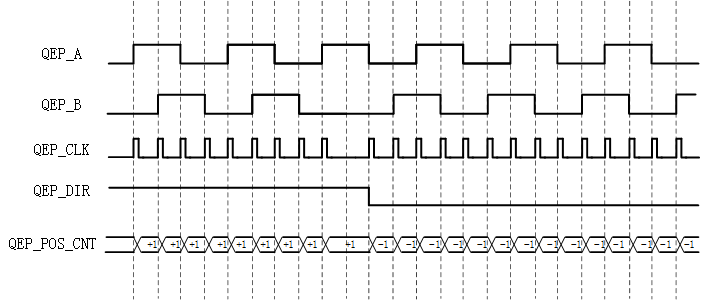

14.1.2. 功能描述¶
14.1.2.1. PWM子模块¶
说明：
PWM子模块PWM_S0/1/2/3/4/5为相同模块，以下的说明中，各个模块的信号都是相同的，但有些地方会以增加标号0/1/2/3/4/5，用于区分不同子模块的信号。例如CNT_CLK0代表PWM_S0的计数器时钟信号CNT_CLK。
14.1.2.1.1. 结构框图¶
上图所示为PWM_S0的结构框图，PWM_S0与PWM_S1/../5的结构基本一致，区别在于PWM0的同步输入输出信号PWM0_SYNCI以及PWM0_SYNCO通过GIPO MUX模块输出，而PWM_S1/../5同步输入输出信号用于内部模块，连接方式参考 计数同步 章节。
PWM_FLT0/1/2/3/4/5输入信号共用于所有的PWM子模块，用于可恢复和不可恢复的故障输入指示。
Counter Function模块，为计数器的功能模块，负责计数器计数、计数器同步、计数器比较等功能。
PWM Generator模块，为PWM的生成模块，负责PWM脉宽控制、PWM死区控制等功能。
PWM Fault模块，为PWM故障控制模块，负责在故障信号生效的时候实施保护功能以及产生中断。
Trigger & Interrupt模块，为ADC触发信号以及中断信号的产生模块。
14.1.2.1.2. 计数器功能模块¶
计数时钟
计数器的时钟由SYS_CLK进行分频得出PWM_CNT_CLK，PWM_CNT_CLK = SYS_CLK / (Divisor1 * Divisor2)，这里的Divisor1/2 为寄存器PWM_CLK_DIV1/2。而SYS_CLK经过Divisor1得到的PWM_XADC_CLK用于控制外部触发ADC转换的信号长度。
除数Divisor1的可配置范围为1/2/4/6/8/10/12/14，除数Divisor2的可配置范围为1/2/4/8/16/32/64/128。
另外，为了确保PWM_S0/S1/S2三个子模块的计数时钟可以同步，需要一个全局的控制信号PWM_CNT_GLB_EN。同步的方式如下：
PWM_CNT_GLB_EN = 0，关闭所有的PWM子模块的功能
配置各个PWM子模块的各自参数
使能各个PWM子模块
PWM_CNT_GLB_EN = 1，打开所有使能的PWM子模块的计数功能，计数器开始计数。
为了获得较好的时钟同步效果，各个使能的PWM子模块需要配置相同的计数器时钟分频系统。
计数方式
通过寄存器字段PWM_CNT_MOD配置，可以对计数器的计数方式进行选择，计数方式有：递增计数、递减计数、先递增后递减计数模式。
递增计数
计数器从0开始递增计数，计数至PWM_CNT_PRDV值时，完成一个周期的计数，并且复位至0重新开始计数。
如下图所示，设置PWM_CNT_PRDV = 6的递增计数，此时进行从0到6的递增计数，在计数值为0的时候，信号PWM_CNT_Z = 1；在计数值为PWM_CNT_PRDV的时候，信号PWM_CNT_PRD = 1；而指示计数方向的信号PWM_CNTD一直为高电平，指示为递增计数。
图 14.1 计数器递增计数¶
递减计数
计数器从PWM_CNT_PRDV开始递减计数，计数至0时，完成一个周期的计数，并且复位至PWM_CNT_PRDV重新开始计数。
如下图所示，设置PWM_CNT_PRDV = 6的递减计数，此时进行从6到0递减计数，在计数值为0的时候，信号PWM_CNT_Z = 1；在计数值为PWM_CNT_PRDV的时候，信号PWM_CNT_PRD = 1；而指示计数方向的信号PWM_CNTD一直为低电平，指示为递减计数。
图 14.2 计数器递减计数¶
先递增后递减计数
计数器从0开始递增计数，计数至PWM_CNT_PRDV后进行递减计数，当计数器计数为1，完成一个周期的计数。下一个周期继续从0开始进行先递增后递减计数。
如下图所示，设置PWM_CNT_PRDV = 6的先递增再递减计数，此时进行先从0到6的递增计数再从6到0的递减计数，在计数值为0的时候，信号PWM_CNT_Z = 1；在计数值为PWM_CNT_PRDV的时候，信号PWM_CNT_PRD = 1；而指示计数方向的信号PWM_CNTD在前半周期为高电平指示此时为递增计数，后半周期指示为递减计数。
图 14.3 计数器先递增后递减计数¶
计数比较
计数器在计数数值达到预设的设定值（PWM_CNT_AV与PWM_CNT_BV），可以产生相应的信号PWM_CNT_A与PWM_CNT_B，具体的时序例子可见下图。
另外，为了区分计数的方向，若为递增计数至PWM_CNT_AV产生的信号记为PWM_CNT_UA，若为递减计数至PWM_CNT_AV产生的信号记为PWM_CNT_DA。
同样若递增计数至PWM_CNT_BV产生的信号记为PWM_CNT_UB，若为递减计数至PWM_CNT_BV产生的信号记为PWM_CNT_DB。
这里产生的信号输出至PWM生成模块以及Trigger & Interrupt模块使用。
计数同步
计数器具有同步的功能，同步信号的使能后，可以使得计数器计数值跳至PWM_CNT_PHV计数同步相位寄存器的数值。
计数器的同步信号的来源有两个，一个是IN_SYNC，一个是SW_SYNC。
IN_SYNC，对于PWM子模块，是外部输入信号，子模块PWM_S0为通过GPIO MUX复用选通连接的外部输入信号PWM0_SYNCI。
SW_SYNC，为PWM子模块通过寄存器设置PWM_SW_FRC_SYNC位而产生，即是软件控制产生。
IN_SYNC与SW_SYNC的信号经过或逻辑后，决定计数器的同步。
另外计数器还会产生输出的同步信号OUT_SYNC，此信号可以通过寄存器设置，选择不同的信号作为OUT_SYNC。OUT_SYNC的来源如图9.10所示。
图 14.7 同步输出信号源¶
PWM子模块利用上述的输入同步信号以及输出同步信号，可以将PWM子模块S0/S1/S2/S3/S4/S5进行计数器的相位同步。各个模块的同步连接方式如下（其中PWM_S0的输出同步信号需通过GPIO_MUX输出给外部器件）：
图 14.8 同步信号网络¶
寄存器更新
寄存器PWM_CNT_PRDV以及PWM_CNT_AV、PWM_CNT_BV的更新支持 立即更新模式 以及 影子寄存器更新 模式。这三个寄存器各有独立控制的更新模式的控制位。
立即更新模式
此模式下，对寄存器PWM_CNT_PRDV以及PWM_CNT_AV、PWM_CNT_BV的数值的写入，会立即生效，影响当前的PWM生成。
影子寄存器更新模式
此模式下，寄存器PWM_CNT_PRDV以及PWM_CNT_AV、PWM_CNT_BV的数值的写入，暂时存入各自的影子寄存器，不会立即生效，只有当计数器计数值复位至0时才进行更新，把影子寄存器的数值生效。
影子寄存器更新模式如下图所示，在PWM_CNT_BV的数值进行写操作从0x2改变为0x4后，并没有立即生效，而是在计数值复位至0开始下一个周期的计数后，PWM_CNT_BV的数值才生效，从而改变了PWM信号的占空比。
图 14.9 PWM_CNT_BV影子寄存器更新¶
14.1.2.1.3. PWM生成模块¶
PWM生成模块，可以产生A、B两个通道的PWM信号。
利用信号PWM_CNT_Z、PWM_CNT_PRD、PWM_CNT_UAV、PWM_CNT_DAV、PWM_CNT_UBV和PWM_CNT_DBV，根据寄存器配置PWM的输出模式，生成PWM信号PWM_SA、PWM_SB。
图 14.10 PWM生成模块的内部框图¶
如上图所示，PWM生成模块的内部由PWM动作控制模块、PWM输出模块、PWM Chopper模块
动作控制
触发产生PWM动作的信号为计数器功能模块产生的信号：
PWM_CNT_Z，计数器数值达到0时产生；
PWM_CNT_PRD ，计数器数值达到PWM_CNT_PRDV时产生；
PWM_CNT_UAV，计数器递增计数达到PWM_CNT_AV时产生；
PWM_CNT_DAV，计数器递减计数达到PWM_CNT_AV时产生；
PWM_CNT_UBV，计数器递增计数达到PWM_CNT_BV时产生；
PWM_CNT_DBV，计数器递减计数达到PWM_CNT_BV时产生；
所有的信号对A、B通道均有效。
PWM_CNT_UBV/DBV所触发的动作优先级最高，其次时PWM_CNT_UAV/DBV所触发的动作。在PWM_CNT_UBV/DBV所触发的动作为无动作时，控制器则跳过CMPB的动作控制，进行PWM_CNT_UAV/DBVd的动作控制。
通过寄存器PWMA_ACT、PWMB_ACT配置，可以在上述的信号上执行以下的动作的类型：
置1：PWM输出信号设置为高电平；
置0：PWM输出信号设置为低电平；
翻转：PWM输出信号进行翻转，若当前信号为高，那么动作执行将PWM信号设置为低电平；
无操作：PWM输出信号无变化，维持现有的信号。
对PWM_CHA的动作做以下的设定，可以得出下图所示的PWM信号：
计数器递增计数，PWM_CNT_BV = 0x2，PWM_CNT_PRD = 0x6；
PWM_CHA的动作设定，PWMA_ACT_CNTZ = 0x2 (置1)，PWM_ACT_CNTUBV = 0x1 (置0)，其他的动作设定则为无动作，那么则可以生成为占空比则为2/7 ≈ 28.5%。
图 14.11 PWM_CHA的生成（PWMA_ACT_CNTZ = 0x2，PWMA_ACT_CNTUBV = 0x1）¶
- 软件强制控制信号
软件强制控制信号，有两种类型的软件控制信号，一种是 非持续的软件强制控制 信号，一种是 持续的软件强制控制 信号。
非持续的软件强制控制信号
此类型的信号，是非持续性的，若有下一个动作控制信号出现，那么则由下个控制信号控制PWM的动作。控制PWM动作的类型包括置1、置0、翻转和无操作。
持续的软件强制控制信号
此类型的信号，是持续性的，即使下一个动作控制信号出现，由于软件强制控制信号优先级最高，而且此信号为持续性的，所以屏蔽后续的控制信号，仍然由持续的软件强制控制信号控制PWM的动作。控制PWM动作的类型包括置1、置0。如需由其他信号控制PWM的动作，需要将此功能关闭。
动作控制信号优先级
当同时出现多个动作控制信号时，执行机制按照优先级最高的控制信号进行。
动作控制信号中，软件强制控制信号的优先级始终最高，其他信号的优先级在不同的计数模式下，排列会有所差异，具体的优先级如下表示。
递增计数模式，优先级排列
优先级
递增阶段
1（最高）
软件强制控制信号
2
PWM_CNT_UB/ PWM_CNT_DB
3
PWM_CNT_UA/ PWM_CNT_DA
4
PWM_CNT_PRD
5（最低）
PWM_CNT_Z
注解
软件需尽量避免PWM_CNT_BV = 0或PRD值的情况出现，因为PWM_CNT_BV对应产生的PWM_CNT_UB/PWM_CNT_DB信号会导致影响PWM_CNT_Z或PWM_CNT_PRD上本应该发生的动作。
PWM输出模式
PWM输出模式可以根据模式选择信号PWM_CH_SEL[1:0]、PWM_POL_SET[1:0]、PWM_BP_SET[1:0]进行配置，选择信号处理的路径：
PWM_CH_SEL[1:0]，通道选择控制信号，分别选择上升沿信号处理通道的输入源，以及下降沿信号处理通道的输入源。两路的信号处理通道都可以选择PWM_CHA或PWM_CHB；
PWM_POL_SET[1:0]，极性选择控制信号，选择正极性或负极性的信号；
PWM_BP_SET[1:0]，旁通选择，PWM_BP_SET[0]可以选择旁通PWM_CHA，PWM_BP_SET[1]可以选择旁通PWM_CHB；
图 14.12 PWM输出模式的控制¶
根据上述的控制信号，下面列出一些典型的PWM输出模式
Case
CH_SEL0，CH_SEL1
POL_SET0，POL_SET1
BP_SET0，BP_SET1
说明（默认死区功能打开）
0
0,0
0,1(1,0)
1,1
互补+死区控制的PWM_CHA输出，PWM_OUTA为正（负）极性，PWM_OUTB为负（正）极性1
1,1
0,1(1,0)
1,1
互补+死区控制的PWM_CHB输出，PWM_OUTA为正（负）极性，PWM_OUTB为负（正）极性2
x,x
x,x
0,0
PWM_CHA直接旁通输出至PWM_OUTA，PWM_CHB直接旁通输出至PWM_OUTB这里输出的就是两路完全独立的PWM信号3
PWM死区控制
死区控制，分别通过对上升/下降边沿的时间进行延迟，延迟的时间通过设置寄存器PWM_RE_DZCTL和PWM_FE_DZCTL寄存器进行配置，延迟时间分别为PWM_RE_DZCTL* PWM_CNT_CLK和PWM_FE_DZCTL * PWM_CNT_CLK。
下图以通道PWM_CHA的信号为例，分别设置PWM_RE_DZCTL = PWM_FE_DZCTL = 1，得到如下的信号，实现上升沿/下降沿的死区时间控制为1 * Tcnt_clk。
图 14.13 PWM_CHA分别插入上升沿死区以及下降沿死区的例子¶
14.1.2.1.4. PWM Chopper模块¶
功能框图
图 14.14 PWM Chopper功能框图¶
上图为PWM Chopper功能框图，PWM Chopper可以通过寄存器PWM_CHOP_EN = 0x1使能，若不使能PWM Chopper模块，PWM_FA/PWM_FB信号直接旁通到PWM_SA/PWM_SB信号。
PWM Chopper Control利用Oneshot产生的信号PWM_OSA/OSB，以及PCLK对PWM_FA和PWM_FB信号进行调制，从而输出调制信号PWM_SA和PWM_SB。
PClock
- One-Shot
Oneshot模块产生Oneshot信号PWM_OSA和PWM_OSB，Oneshot信号以PWM_FA/FB信号的上升边沿为触发边沿，产生脉宽为PWM_CHOP_OS_WTH * PSCLK的Oneshot信号。
如下图所示，PWM_CHOP_OS_WTH = 0x1，产生了PWM_OSA信号，利用PMW_OSA以及PCLK信号进行调制，得出PWM_SA。
图 14.17 PCLK以及Oneshot调制¶
14.1.2.1.5. PWM保护模块¶
故障指示输入
每个PWM保护模块均支持6路的故障指示输入，可以通过配置寄存器选通6路的故障输入信号（PWM_FLT0/1/2/3/4/5_IN），此6路故障输入信号经过或逻辑得到FALT_ALL信号，此信号直接控制PWM执行故障操作。另外由于PWM保护模块同时支持可恢复故障模式和不可恢复故障模式，因此存在两路的或逻辑，得到PWM_FLT_ALL0和PWM_FLT_ALL1，PWM_FLT_ALL0用于可恢复故障模式，PWM_FLT_ALL1用于不可恢复故障模式，如下图所示。
图 14.18 PWM故障指示输入¶
故障操作
当故障指示输入有效，那么PWM强制执行故障操作，PWM输出信号的故障操作包括：
PWM强制输出高电平
PWM强制输出低电平
PWM强制输出高阻态
无操作
另外，软件可以通过寄存器设置，强制PWM输出执行故障操作。
故障模式
PWM保护模块可以同时支持两种类型的故障模式，一种为可恢复的故障模式，另一种为不可恢复的故障模式。
可恢复故障模式：
此模式下，当PWM_FLT_ALL0有效，PWM模块立即执行故障操作，如果有使能中断模式，则产生PWM_RC_FALT_INT中断。当计数器计数复位至0，若PWM_FLT_ALL0信号变回无效状态吗，那么PWM的故障操作解除，PWM可以继续正常工作。
不可恢复故障模式
此模式下，当PWM_FLT_ALL1有效，PWM模块立即执行故障操作，如果有使能中断模式，则产生PWM_NRC_FALT_INT中断。当出现不可恢复的故障，那么此时PWM一直处于故障操作的状态，不能修改。不可恢复故障的消除，只能通过软件写寄存器消除此状态，才可以使得PWM再次正常工作。
故障中断
故障中断，由可恢复故障中断PWM_RC_FALT_INT与不可恢复中断PWM_NRC_FALT_INT进行或逻辑所得PWM_FALT_INT信号。
PWM初始值配置
通过寄存器的设置，可以配置PWM的输出信号PWM0/1/2/..5_A以及PWM0/1/2/..5_B在PWM功能未使能的情况下的初始值。
以PWM0_A信号为例子，在PWM_S0子模块未使能的情况下，可以有以下的情况：
若PWM_A_INIT = 0x0，那么在PWM子模块未使能的情况下，此时PWM0_A输出的电平为低电平。
若PWM_A_INIT = 0x1，那么在PWM子模块未使能的情况下，此时PWM0_A输出的电平为高电平。
若PWM_A_INIT = 0x2/3，那么在PWM子模块未使能的情况下，此时PWM0_A输出为高阻态。
14.1.2.1.6. ADC采样触发和中断模块¶
ADC采样触发
PWM子模块可以通过ADC采样触发的功能，产生ADC采样使能信号，直接触发ADC进行模拟信号的采集。每个PWM子模块可以最多产生2x的ADC采样触发信号，PWM_ADC_CVRA和PWM_ADC_CVRB。
产生采样触发信号的输入源与控制PWM动作的信号一致，可以选择PWM_CNT_Z、PWM_CNT_PRD、PWM_CNT_UA、PWM_CNT_DA、PWM_CNT_UB、PWM_CNT_DB信号作为触发信号。
ADC采样触发，可以配置通过寄存器字段PWM_ADC_CVRB_DIV触发信号产生的频次，频次可配置为每次、每两次、每三次产生触发信号。以CNTZ信号为例，若配置频次为每三次，那么当出现三次的CNTZ有效信号，才会产生一次的ADC采样信号。
PWM中断
每个PWM子模块可以产生1x的PWM中断信号，此中断信号的产生也是与PWM动作的信号一致，可以选择PWM_CNT_Z、PWM_CNT_PRD、PWM_CNT_UA、PWM_CNT_DA、PWM_CNT_UB、PWM_CNT_DB信号作为中断信号PWM_INT。
PWM中断信号PWM_INT，同样可以通过寄存器PWM_INT_DIV字段配置信号产生的频次，频次可配置为每次、每两次、每三次产生触发信号。以CNTZ信号为例，若配置频次为每三次，那么当出现三次的CNTZ有效信号，才会产生一次的PWM中断信号。
14.1.2.1.7. 输入信号过滤¶
对于保护模块的输入信号PWM_FLT0/1/2/3/4/5_IN，是经过输入信号过滤模块过滤的信号。输入信号过滤模块，用于滤除噪声信号，每路的输入信号都配置有对应的输入滤波模块，功能框图如下：
图 14.19 输入滤波功能¶
上图以PWM_FLT0信号为例，可以看出输入滤波的功能可以设置成2种模式
同步信号输出，即通过SYS_CLK对输入信号PWM_FLT0进行同步
1/2/…/15采样点的同步信号输出，即同步信号经过Sample CTL模块，判定1/2/…/15个采样点为相同值的信号认为有效信号，否则认为噪声信号进行滤除
这里对Sample CTL模块的功能进行进一步的描述：
Sample CTL模块的输入信号是IN Sync模块的输出信号，即SYS_SCLK对PWM_FLT0信号进行同步得出PWM_FLT0_SYNC信号。
通过配置Sample CTL模块的寄存器，可以配置对PWM_FLT0_SYNC信号的采样周期，采样周期为1x/2x/4x/…/510x SYSCLK。
通过配置寄存器，可以配置1/2/…/15采样点的同步信号输出，即以1/2/…/15个采样点的时间长度作为一个处理周期，若这个周期的采样点均为相同值则认为是有效值，那么PWM_FLT0_IN的信号输出此有效值。
下面以采样周期配置为2x SYSCLK、5采样点同步信号输出的配置为例，对PWM_FLT0_SYNC信号进行处理，如下图所示。在T0时刻，对PWM_FLT0_SYNC进行第一次的信号采集，采集为0信号，由于接下来采集的4次信号均为0信号，所以在第五个采样点的时候，PWM_FLT0_IN进行了翻转，输出位0信号，这样就完成一个处理周期。而在T1时刻，由于第一次采集信号为0信号，而第二次采集信号出现1信号，那么此次处理周期判定为无效值，PWM_FLT0_IN维持当前值。
图 14.20 5采样点同步信号输出¶
14.1.2.2. CAP子模块¶
CAP子模块，具有捕捉模式和简单PWM输出两种模式。
捕捉模式是一种输入的模式，对输入的信号进行边沿的捕获，从而获得周期等时间信息。
简单PWM输出模式是一种输出模式，产生简单PWM信号（相对PWM子模块产生的信号）。
捕捉模式与PWM模式上复用相同的信号CAPx_IO(0/1/2)。
说明：
CAP子模块CAP_S0/S1/S2均为相同模块，以下的说明中，各个模块的信号都是相同的，但有些地方会以增加标号0/1/2，用于区分不同子模块的信号。例如CNT_CLK0代表PWM_S0的计数器时钟信号CNT_CLK。
14.1.2.2.1. 结构框图¶
图 14.21 CAP_S0子模块结构框图¶
上图所示为CAP_S0的结构框图，CAP_S0与CAP_S1/2的结构基本一致；
CAP_S0主要由计数功能模块、PWM功能模块、捕捉功能模块和中断功能模块组成，其中PWM功能模块与捕捉功能模块是二选一功能；
14.1.2.2.2. 计数器功能¶
捕捉模式以及简单PWM输出模式，采用相同的计数器模块，计数器为32bit计数器。
计数时钟
CAP模块的计数器的时钟无分频系数控制，直接由SYS_CLK驱动。
计数器在计数值等于CAP_CNT_PRDV(即PMW模式下CAP_REG0)可产生CAP_CNT_PRD信号。
计数器在计数值等于CAP_CNT_CMPV(即PMW模式下CAP_REG1)可产生CAP_CNT_CMP信号。
在计数值达到0xFFFF_FFFF时可产生CAP_CNT_OVFL信号。
计数同步
CAP模块的计数器支持外部输入信号同步计数器，以及输出同步信号。
输入同步
当输入同步信号CAP_SYNCI有效，计数器将同步相位寄存器CAP_CNT_PH的数值加载至计数器，从而达到计数器相位的同步效果。另外CAP_S0/1/2的输入同步信号的连接方式，可以参考 PWM计数同步 章节描述。
输出同步
输出同步信号，通过寄存器CAP_SYNC_OUT，可以选择CAP_SYNCI信号或CAP_CNT_PRD信号输出。
图 14.22 同步输出信号的选通¶
14.1.2.2.3. 捕捉输入功能¶
功能框图
图 14.23 捕捉输入的功能框图¶
输入滤波
CAP子模块在捕捉输入功能下，输入信号CAP0/1/2_IO均需要经过输入滤波模块，产生CAP0/1/2_IO_PRCS信号。
输入滤波功能，主要是用于滤除噪音信号，功能描述可以参考PWM子模块的 输入滤波 章节描述。
捕捉边沿预处理
捕捉边沿预处理功能，通过寄存器字段CAP_IN_EDG_EVN_DIV配置对输入信号CAP_IO的边沿翻转进行处理。如设置CAP_IN_EDG_EVN_DIV = 0x1，输入信号的每两次的翻转边沿才触发1次的翻转，从而得到信号CAP_IO_DIV。这样的预处理可以降低输入信号的翻转的频次。
捕捉事件属性
捕捉事件的产生即是针对CAP_IO_DI信号的上下边沿的捕捉。
捕捉事件EVENT0/1/2/3可以根据需求，通过寄存器字段CAP_EVNT0/1/2/3_POL，设置事件为上升沿捕捉或下降沿捕捉，以及通过寄存器字段CAP_EVNT0/1/2/3_RST配置发生捕捉事件后是否复位计数器，这样的配置方式可以计算出两次边沿的时间差值。
捕捉事件逻辑
CAP子模块配有4个捕捉寄存器CAP_REG0/1/2/3，每个寄存器对应一个捕捉事件CAP_EVNT0/1/2/3，当输入信号满足捕捉事件的特性，则产生捕捉信号CAP_EVNT0/1/2/3，对计数器的数值进行捕捉。
捕捉事件依次按照EVENT0、EVEMT1、EVENT2、EVENT3进行，所以捕捉到的计数器数据依次写入寄存器CAP_REG0、CAP_REG1、CAP_REG2、CAP_REG3。
捕捉状态可以通过寄存器字段CAP_OS_MOD_EN配置为连续捕捉模式或单次捕捉模式。连续捕捉模式，那么从EVENT0执行到EVETN3后，继续从EVENT0执行到EVENT3，按照顺序循环进行。
单次捕捉模式，通过配置寄存器字段CAP_OS_EP配置需要捕捉的事件次数，当从EVENT0执行到所需的事件次数后，CAP子模块不再进行捕获，CAP_REG0/1/2/3寄存器的数据锁存当前数据。
14.1.2.2.4. 简单PWM输出功能¶
功能框图
图 14.24 简易PWM输出功能框图¶
PWM周期以及比较值寄存器
在简易PWM模式下，寄存器CAP_REG0/1/2/3会做以下的复用：
寄存器CAP_REG0作为CAP_CNT_PRD使用，用于设置PWM输出信号的周期值，并且在计数值达到此值的时候，PWM输出的信号设置为高；
寄存器CAP_REG1作为CAP_CNT_CMP使用，用于设置PWM输出信号的比较值，并且在计数值达到此值的时候，PWM输出的信号设置为低，这样可以调节PWM信号的脉宽；
寄存器CAP_REG2作为CAP_CNT_PRD的影子寄存器使用，影子寄存器更新的方式是在计数器的数值达到CAP_CNT_PRD的时候更新；
寄存器CAP_REG3作为CAP_CNT_CMP的影子寄存器使用，影子寄存器更新的方式是在计数器的数值达到CAP_CNT_PRD的时候更新；
由上可知，对CAP_CNT_PRD写操作，那么CAP_CNT_PRD直接更新，若对影子寄存器CAP_CNT_PRD_SHD写操作，那么在计数器数值达到周期值时才进行更新。CAP_CNT_CMP寄存器的更新方式也是同理。
另外，PWM的输出极性可以利用寄存器CAP_PWM_POL，配置PWM最终输出的极性，即有效电平为高还是低。
14.1.2.3. QEP子模块¶
说明：
PWM_CNT_CLK_DIV，此文本格式的字段表示为寄存器字段
PWM_CNT_CLK，此文本格式的字段表示为数字信号
14.1.2.3.1. 结构框图¶
图 14.26 QEP0结构框图¶
QEP0子模块主要由Quad Decoder正交解码模块、QEP Position Counter Function位置计数器功能模块、QEP Capture Function正交捕捉模块、QEP Timer定时器、QEP Watchdog Timer看门狗定时器和QEP Interrupt中断模块等构成。
Quad Decoder：正交解码模块，用于将正交信号A相、B相进行正交信号的解码，获得后续QEP Position Counter需要的计数时钟QEP_CLK以及计数方向QEP_DIR等信息；
QEP Position Counter Function：位置计数器功能模块，根据正交解码模块解析的信号进行位置计数器的计数；
QEP Capture Function：QEP捕捉功能，用于捕捉特定的位置距离的所需要的时间，从而计算转速等信息。
QEP Timer：QEP定时器，用于产生单位时间间隔的信号
QEP Watchdog Timer：QEP看门狗定时器。用于检测预设的时间内是否仍有有效QEP_CLK信号
QEP Interrupt：QEP中断模块，用于产生中断信号。
14.1.2.3.2. 正交解码¶
通过寄存器字段QEP_DEC_CNT_MODE，可配置解码器工作在四种解码方式
QEP_DEC _CNT_MODE = 0x0，正交计数解码
QEP_DEC _CNT_MODE = 0x1，方向计数解码
QEP_DEC _CNT_MODE = 0x2，递增计数解码
QEP_DEC _CNT_MODE = 0x3，递减计数解码
正交计数解码
正交计数解码方式，外部信号QEP_A和QEP_B输入作为正交信号，根据QEP_A与Q_EPB的信号的相位信息解析出提供后续解码计数器的步进信号QEP_CLK以及步进方向信号QEP_DIR。
图9.30所示为，QEP_A和QEP_B信号组成的相位PH_AB在正向步进以及反向步进的正确跳转，错误的跳转为PH_00与PH_11之间的跳转，以及PH_10和PH_01之间的跳转。
图9.31所示QEP_A和QEP_B的正交计数方式。
正交解码方式
N/A
计数器进行+1计数(即产生递增计数)
QEPA
上升沿
下降沿
高电平
低电平
QEPB
低电平
高电平
上升沿
下降沿
N/A
计数器进行-1计数(即产生递减计数)
QEPA
上升沿
下降沿
低电平
高电平
QEPB
高电平
低电平
上升沿
下降沿
图 14.27 正交相位（格式PH_AB）的正向和反向步进¶
图 14.28 正交计数解码¶
另外正交计数解码还具有以下的功能：
相位异常检测：输入的QEP_A以及QEP_B的相位不符合正常的相位跳转模式，则产生正交信号异常的中断信号QEP_QUADPH_ERR；
互换功能：通过寄存器字段QEP_SWAP_AB配置为1， 可将QEP_A和QEP_B的输入信号互换。
- 方向计数解码
方向计数解码方式，则无需经过正交信号的解码，外部信号QEP_A和QEP_B输入分别作为时钟信号QEP_CLK和方向信号QEP_DIR，QEP_DIR决定计数的方向，QEP_CLK用于控制计数的步进。 默认的配置下(即输入信号的极性未进行方向反相)，QEP_DIR为高电平的时候，表示正交计数器进行递增计数，QEP_DIR为低电平的时候，表示正交计数器进行递减计数。 另外QEP_A的信号可以配置为上升沿触发一次QEP_CLK有效边沿，或上下沿均可触发一次的QEP_CLK有效边沿。
图 14.29 方向计数解码（QEP_A用于QEP_CLK，QEP_B用于QEP_DIR）¶
递增/递减计数解码
此解码方式下，内部信号QEP_DIR固定选定为递增/递减的方向，此时只需QEP_A的输入信号，而QEP_B信号无效。
另外QEP_A的信号可以配置为上升沿触发一次QEP_CLK有效边沿，或上下沿均可触发一次的QEP_CLK有效边沿。
CW/CCW计数解码
CW/CCW计数解码方式包括高有效的CW/CCW解码计数和低有效的CW/CCW解码计数：
高有效的CW/CCW解码方式

图 14.30 高有效的CW/CCW解码计数¶
上图为高有效的CW/CCW的解码计数方式，高有效是指低电平为无效电平，高电平为有效电平，当从低电平跳至高电平产生的上升边沿为有效边沿。若此有效边沿出现在QEP_A信号，即CW信号，那么则位置计数器正向加1；若此有效边沿出现在QEP_B信号，即CCW信号，那么则位置计数器反向减1。
另外如若出现QEP_A和QEP_B同时处于有效电平高电平时，则产生CW/CCW错误中断信号，QEP_CW_CCW_ERR_INT。
低有效的CW/CCW解码方式
图 14.31 低有效的CW/CCW解码计数¶
上图为低有效的CW/CCW的解码计数方式，低有效是指高电平为无效电平，低电平为有效电平，当从高电平跳至低电平产生的下降边沿为有效边沿。若此有效边沿出现在QEP_A信号，即CW信号，那么则位置计数器正向加1；若此有效边沿出现在QEP_B信号，即CCW信号，那么则位置计数器反向减1。
另外如若出现QEP_A和QEP_B同时处于有效电平低电平时，则产生CW/CCW错误中断信号，QEP_CW_CCW_ERR_INT。
输入反相
QEP模块的输入信号QEP_A、QEP_B、QEP_I和QEP_S，均可以通过寄存器配置相应的输入反相器是否使能。使能后，输入信号为低有效信号。
输入QEP_IGATE
QEP模块的输入信号QEP_I 可以通过寄存器字段QEP_IGATE配置是否需要使能信号QEP_S对QEP_I进行Gate处理，处理方式如下图。
图 14.32 QEP_IGATE控制¶
位置比较输出
QEP Position Counter Function模块输出的信号QEP_SOUT信号，是位置计数器达到寄存器QEP_POS_CNT_CMPV时所产生的信号，该信号输出至正交解码模块，这里可以通过寄存器QEP_SYNC_OUT_PIN选择，使能输出为QEP_I或QEP_S信号。
输入滤波
QEP子模块的信号QEP_A、QEP_B为外部输入信号，支持输入信号的滤波。而QEP子模块的信号QEP_I、QEP_S为双向信号，当设置为输入信号时，同样支持输入信号的滤波。
输入滤波功能，主要是用于滤除噪音信号，功能描述可以参考PWM子模块的 输入滤波 章节描述。
14.1.2.3.3. 正交位置计数功能¶
功能框图
图 14.33 正交位置计数功能框图¶
正交位置计数器的复位
通过寄存器字段QEP_POS_CNT_RST，配置正交位置计数器四种复位模式：
复位模式1，QEP_POS_CNT_RST = 0x0，QEP_IDX_MKR信号复位位置计数；
QEP_IDX_MKR信号是表示位置回到0点位置，该信号的产生方式如下：
在位置计数器启动，第一次检测到QEP_IDX的有效边沿，此时在QPE_IDX边沿的后续第一个正交信号边沿（若QEP_IDX为与QEP_A、QEP_B Gated的信号，则当前边沿为第一个正交信号边沿）产生QEP_IDX_MKR信号，并且此时记录当前A、B相的边沿（上或下边沿）、产生QEP_FIDX_MKR标记以及锁存此时的方向状态QEP_FIDX_MKR_DIR_FLG。
接下来继续检测到的QEP_IDX的有效边沿信号，如果此时的方向为正向前进那么在与第一Index Marker相同的边沿产生QEP_IDX_MKR信号；若为反向前进则在相反的边沿产生QEP_IDX_MKR信号。另外，QEP_FIDX_MKR和QEP_FIDX_MKR_DIR_FLG的状态不会再改变，直至QEP模块的复位。
QEP_IDX_MKR信号复位位置计数的模式下，只要出现QEP_IDX_MKR信号，正交位置计数器则进行一次复位，若为正向前进，那么复位值为0；若为反向前进，则复位值为QEP_POS_CNT_EPV。另外在QEP_IDEX_MKR信号的有效边沿，进行位置计数器的锁存，将当前的QEP_POS_CNT_V数值锁存在QEP_POS_CNT_ICAPV。
另外此模式下，会进行锁存值的判断检测，在正向前进的情况下，如果QEP_IDX_MKR信号触发写入QEP_POS_CNT_ICAPV的数值与的QEP_POS_CNT_EPV数值不一致，那么QEP_POS_CNT_ERR_FLG置1以及QEP_POS_CNT_ERR_INT_FLG置1，表示产生位置计数的错误。
复位模式2，QEP_POS_CNT_RST = 0x1，QEP_POS_CNT_EP信号复位位置计数；
QEP_POS_CNT_EP信号，表示的是QEP_POS_CNT_OVFL和QEP_POS_CNT_UNFL进行或逻辑信号。
递增计数时，当计数达到QEP_POS_CNT_EPV时，复位计数器数值为0，同时产生QEP_POS_CNT_OVFL中断信号，指示位置计数器计数上溢出。
递减计数时，当计数达到0时，复位计数器数值为QEP_POS_CNT_EPV，同时产生QEP_POS_CNT_UNFL信号，指示计数器计数下溢出。
复位模式3，QEP_POS_CNT_RST = 0x2，QEP_FIDX_MKR信号复位位置计数；
QEP_FIDX_MKR信号，为QEP模块使能后第一次检测到的QEP_IDX_MKR信号。
此模式下，位置计数器会在QEP_FIDX_MKR信号进行复位，如果为正向前进，那么复位至0，如果为反向则复位至QEP_POS_CNT_EPV。由于后续不会再产生QEP_FIDX_MKR信号，后续的位置计数器复位，通过QEP_POS_CNT_EP信号复位，即按照模式2进行复位。
复位模式4，QEP_POS_CNT_RST = 0x3，QEP_TMR_TO信号复位位置计数；
QEP_TMR_TO信号，为QEP定时器超时的信号。
此模式下，位置计数器会在QEP_TMR_TO信号进行复位，如果为正向前进，那么复位至0，如果为反向则复位至QEP_POS_CNT_EPV。
正交位置计数器的捕获
计数的锁存支持两种，Index相关事件触发的捕获以及Strobe相关事件触发的捕获
Index相关事件的触发捕获，通过寄存器可选择触发捕获位置计数器的Index事件；
QEP_POS_ICAP_MOD = 0x1，使能QEP_IDX信号的上升沿触发捕获位置计数器，位置计数值QEP_POS_CNT_V写入QEP_POS_CNT_ICAPV；
QEP_POS_ICAP_MOD = 0x2，使能QEP_IDX信号的下降沿触发捕获位置计数器，位置计数值QEP_POS_CNT_V写入QEP_POS_CNT_ICAPV；
QEP_POS_ICAP_MOD = 0x3，使能QEP_IDX_MKR信号触发捕获位置计数器，位置计数值QEP_POS_CNT_V写入QEP_POS_CNT_ICAPV；
Strobe相关事件的触发捕获，通过寄存器可选择触发捕获位置计数器的Strobe事件；
QEP_POS_SCAP_MOD = 0x0，使能QEP_SRB信号的上升沿触发捕获位置计数器，位置计数值QEP_POS_CNT_V写入QEP_POS_CNT_SCAPV；
QEP_POS_SCAP_MOD = 0x1，使能根据方向进行捕获。正向前进时，以QEP_SRB上升沿进行捕获，反向前进时，以QEP_SRB下降沿进行捕获，位置计数值QEP_POS_CNT_V写入QEP_POS_CNT_ICAPV；
正交位置计数器的初始化
位置计数器的初始化支持三种模式的初始化：
Index相关事件的初始化，通过寄存器可选择触发位置计数器初始化的Index事件；
QEP_POS_IDX_INIT = 0x2，使能QEP_IDX信号的上升沿触发位置计数器的初始化，位置起点值QEP_POS_CNT_SPV写入位置计数器；
QEP_POS_IDX_INIT = 0x3，使能QEP_IDX信号的下降沿触发位置计数器的初始化，位置起点值QEP_POS_CNT_SPV写入位置计数器；
Strobe相关事件的初始化，通过寄存器可选择触发位置计数器初始化的Strobe事件；
QEP_POS_SRB_INIT = 0x2，使能QEP_SRB信号的上升沿触发位置计数器的初始化，位置起点值QEP_POS_CNT_SPV写入位置计数器；
QEP_POS_SRB_INIT = 0x3，使能QEP_SRB信号的下降沿触发位置计数器的初始化，位置起点值QEP_POS_CNT_SPV写入位置计数器；
软件初始化，寄存器QEP_POS_SW_INIT字段置1可触发位置计数器初始化，完成后自动清0。
QEP_SOUT信号
QEP_SOUT信号，为位置计数器达到QEP_POS_CNT_CMPV的时候产生的信号，此信号只有在QEP_POS_CMP_EN = 1的时候才产生。通过寄存器，QEP_SOUT信号支持极性的控制，以及脉宽长度的调节。
另外寄存器QEP_POS_CNT_CMPV的更新方式支持立即更新以及影子更新模式，影子更细的加载点也可以通过寄存器配置，具体配置见QEP_POS_CMP_LP和QEP_POS_CMP_UPDT_MOD的描述。
QEP_SOUT信号的输出方式见 位置比较 输出章节。
14.1.2.3.4. 正交时间捕捉功能¶

图 14.37 时间捕捉功能框图¶
时间捕捉功能的框图如上图所示，具体的功能描述如下：
SYS_CLK信号输入，利用寄存器字段QEP_CAP_TMR_CLK_DIV进行分频，分频后提供给Capture定时器以及定时器的控制；
QEP_CLK信号输入，经过Unit Distance Control功能，这里相当于是对QEP_CLK的分频，设定特定的除数，对应就可以获得单位距离的信号QEP_UD_EVNT；
QEP_UD_EVNT信号触发Capture Control进行对Capture定时器的数值捕获，将QEP_CAP_TMRV的数值写入QEP_CAP_DELT寄存器中，并且复位Capture定时器的计数值为0；
QEP_TMR_TO信号触发对Timer的寄存器QEP_CAP_TMRV锁存至QEP_CAP_TMR_LH，而QEP_CAP_DELT锁存至QEP_CAP_DELT_LH；
QEP_DIR输入至方向检测模块，此模块检测在QEP_UD_EVNT的有效边沿间隔中是否出现方向改变的状态，若出现反向改变，QEP_CAP_DERR信号置1；
图 14.38 QEP Capture Timer时间捕获¶
14.1.2.3.5. QEP Timer¶
QEP Timer的功能框图如下所示，当寄存器QEP_TMR_V的数值大于QEP_TMR_PRD_V时，产生QEP_TMR_TO超时信号。
图 14.39 QEP Timer功能框图¶
14.1.2.3.6. QEP Watchdog Timer¶
QEP Watchdog Timer的功能框图如下所示，QEP_CLK信号用于对看门狗定时器的复位，当无有效的QEP_CLK信号出现时，看门狗计时器一直计数，当QEP_WDTMR_V的数值大于QEP_WDTMR_PRD_V时，产生QEP_WDTMR_TO超时信号。
图 14.40 QEP Watchdog Timer功能框图¶
14.1.2.3.7. QEP Hall Monitor¶
QEP Hall Monitor的功能用于对外部的3路输入信号QEP_HA0/1/2的电平检测：
3路的输入信号均配有滤波模块，支持电路的硬件滤波；
3路的输入信号的电平通过寄存器显示，检测极性配置QEP_HALL_IN_POL = 0时（正极性），0代表低电平，1代表高电平，若为负极性则相反；
3路的输入信号若由其中一路发生改变，则产生中断，读取状态寄存器QEP_HALL_CHG_FLG可以得出发生信号改变的通道号；
14.1.2.3.8. 中断¶
QEP模块支持产生中断，通过寄存器可以使能以下的信号经过OR逻辑得出QEP模块的中断信号QEP_INT：
QEP_TMRTO
QEP Timer Timeout信号，指示QEP计数器超时的信号
QEP_ICAP
QEP Index Capture信号，指示发生Index相关事件引起的捕获位置计数器的信号
QEP_SCAP
QEP Strobe Capture信号，指示发生Strobe相关事件引起的捕获位置计数器的信号
QEP_POS_CMP
QEP Position Compare信号，指示产生了位置比较信号
QEP_POS_CMP_RDY
QEP Position Compare Ready信号，指示位置比较寄存器QEP_POS_CNT_CMPV的数值需要更新
QEP_POS_CNT_OVFL
QEP Position Counter Overflow信号，指示位置计数器发生上溢出的信号
QEP_POS_CNT_UDFL
QEP Position Counter Underflow信号，指示位置计数器发生下溢出的信号
QEP_WDTO
QEP Watchdog Timer Timeout信号，指示看门狗计时器发生超时的信号
QEP_DIR_CHG
QEP Direction Change信号，指示QEP的正交解析的方向信号发生了改变
QEP_QUADPH_ERR
QEP Quad Phase Error信号，指示QEP的正交解析的相位信号发生错误
QEP_POS_CNT_ERR
QEP Position Counter Error信号，指示QEP的位置计数器计数出错的信号
QEP_CW_CCW_ERR_INT
QEP CW/CCW Error信号，指示QEP输入的CW和CCW信号出现异常
QEP_HALL_INT
QEP 霍尔输入中断信号，指示QEP输入霍尔信号HA0/1/2的通道中，至少存在一个通道发生输入信号的改变
14.1.2.4. 全局控制¶
14.1.2.4.1. 全局时钟控制¶
PWMCS控制系统的各个模块均具有对时钟源SYS_CLK的使能控制位，详细见寄存器GLB_CLK_CTL。
14.1.2.4.2. 全局中断¶
PWMCS控制系统包括以下的全局中断：
PWM全局中断
PWM子模块PWM_S0/1/…/5各自的中断信号PWM0/1/…/5_INT，进行或逻辑后产生PWM全局中断信号PWM_GLB_INT。通过寄存器GLB_PWM_INT_STS可以查看各个PWM子模块对应的中断信号PWM0/1/…/5_INT的状态。
PWM全局故障中断
PWM子模块PWM_S0/1/…/5各自的故障中断信号PWM0/1/…/5_FLT_INT，进行或逻辑后产生PWM全局故障中断信号PWM_GLB_INT。通过寄存器GLB_PWM_FLT_INT_STS可以查看各个PWM子模块对应的中断信号PWM0/1/…/5_INT的状态。
CAP全局中断
CAP子模块CAP_S0/1/2各自的中断信号CAP0/1/2_FLT_INT，进行或逻辑后产生CAP全局中断信号CAP_GLB_INT。通过寄存器GLB_CAP_INT_STS可以查看各个CAP子模块对应的中断信号CAP0/1/2_INT的状态。
QEP全局故障中断
QEP子模块QEP_S0/1各自的中断信号QEP0/1_FLT_INT，进行或逻辑后产生QEP全局中断信号QEP_GLB_INT。通过寄存器GLB_QEP_INT_STS可以查看各个QEP子模块对应的中断信号QEP0/1_FLT_INT的状态。